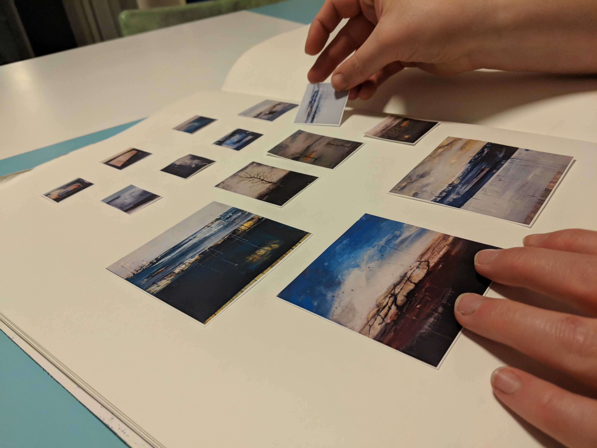

I’m working on a simple portfolio site for Karen O’Dowd, an NCAD graduate whose wor explores the intersections of landscape and memories. I hope to use an asymmetrical CSS Grid layout and fade transitions to enhance the dreamlike qualities of her paintings.
In Progress
Tags:
- Collaborative Prototyping
- Mood Board
- Visual Design
- HTML, CSS & JavaScript
- Deployment